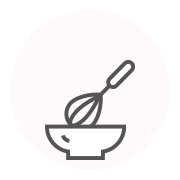
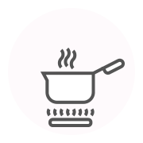
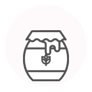
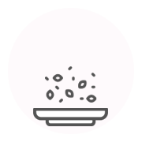

체험학습 프로그램 소개
강정 만들기 (오란다 / 영양바)
강정은 예로부터 과자중에 으뜸으로 쳤던 전통과자입니다.
곡류나 씨앗을 볶아서 조청으로 버무리고, 모양을 내서 잘라 낸 과자로 입에 들어가 바삭하게 부서지면서 고소하게 씹히는 맛이 일품인 강정을 만듭니다.
- 종류 : 백년초 / 치자 / 녹차 / 견과류
- 재료 : 강정용 쌀 튀밥, 조청, 순수한 자연의 맛 천연가루
| 소요시간 | 비용 | 체험 가능일 |
|---|---|---|
| 100분 | 13,000원 | 상시 (일요일 제외) |
제조 과정
-
01
조청 끓이기
프라이팬에 조청, 설탕, 식용유 등을 넣고 중불에 기포가 생기도록 끓인다.
-
02
쌀 튀밥 넣기
약한 불에서 줄인 후 견과류와 쌀 튀밥 2컵을 넣은 후, 엿물이 쌀 튀밥과 골고루 섞이도록 빨리 섞어준다.
-
03
저어주기
가느다란 실모양이 나올때까지 저어줍니다.
-
04
밀대로 밀어주기
엿강정 틀에 준비된 재료를 넣고 손으로 고르게 편 다음 밀대로 밀어줍니다.
-
05
적당한 크기로 자르기
적당한 크기로 자른 후 쟁반에 부어 식혀줍니다.
다식 만들기
다식은 볶은 곡물가루나 송화가루 등을 꿀이나 조청으로 반죽하여 다식판에 문양을 그대로 만든 제품입니다.
차와 함께 곁들이면 입안에서 은은하게 퍼지는 맛과 향을 지닌 다식을 만듭니다.
- 재료 : 콩가루, 송화가루, 꿀 or 설탕시럽 (물엿 1컵, 설탕 1/2컵, 꿀 4큰술, 물 2큰술, 소금 약간)
| 소요시간 | 비용 | 체험 가능일 |
|---|---|---|
| 80분 | 13,000원 | 상시 (일요일 제외, 예약 별도 문의) |
제조 과정
-
01

반죽 만들기
콩가루나 송화가루에 꿀을 섞어 한 덩어리가 되도록 만들어 준다.
반죽이 너무 질면 안되며 반죽 상태를 보고 조절한다. -
02
틀에 찍기
틀에 적당한 크기로 동글하게 만들어 틀 위에 놓고 찍어준다.
-
03
그릇에 담기
찍어낸 다식을 그릇에 담는다.
유과 만들기
유과는 명절이나 잔칫상에 꼭 준비하는 음식, 한과의 꽃이라고 할 수 있습니다.
바삭하며 입에서 사르르 녹는 맛이 일품인 유과를 만듭니다.
- 재료 : 유과 반죽, 조청, 고물(찹쌀, 백련초)
| 소요시간 | 비용 | 체험 가능일 |
|---|---|---|
| 100분 | 13,000원 | 상시 (일요일 제외, 예약 별도 문의) |
제조 과정
-
01 
반죽 만들기
찹쌀을 일주일간 물에 담가 삭힌 후 가루를 내어 콩물과 소주를 넣고 반죽한다. 시루에 찐 다음 공기가 들어가도록 절구로 친 후, 전분을 덧 가루로 사용하여 얇게 밀고 필요한 사이즈로 재단하여 건조한다.
-
02 
기름에 튀기기
건조된 유과 반죽을 기름에 불린뒤 50도에 튀겨 떠오르면, 150도 온도의 기름에 튀겨 안정적인 반죽을 만든다.
-
03 
조청 묻히기
조청을 묻혀준다.
시간이 너무 지체되면 유과 반죽에 수분이 들어가므로 되도록 빠른 시간내에 진행한다. -
04 
고물 묻히기
집청 한 후에 쌀 튀밥 고물을 묻혀준다.